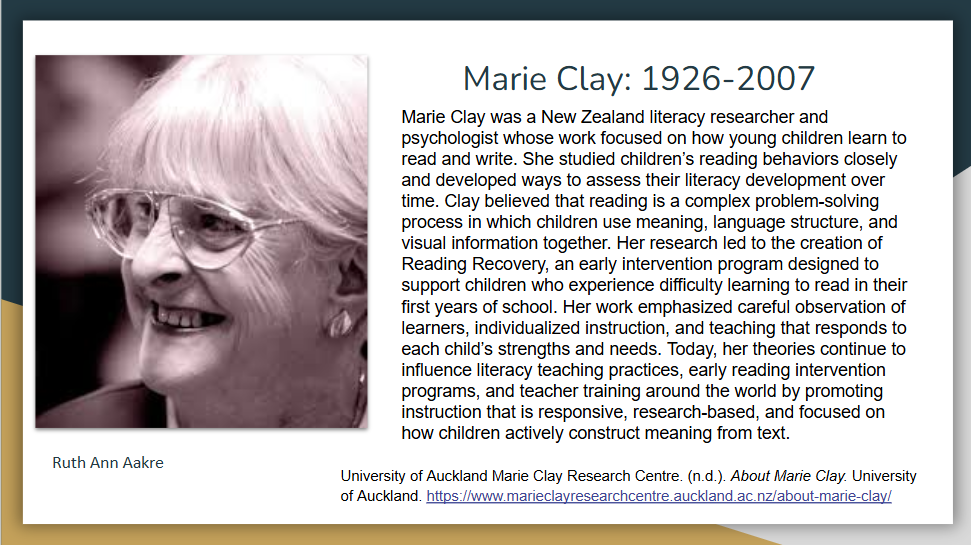
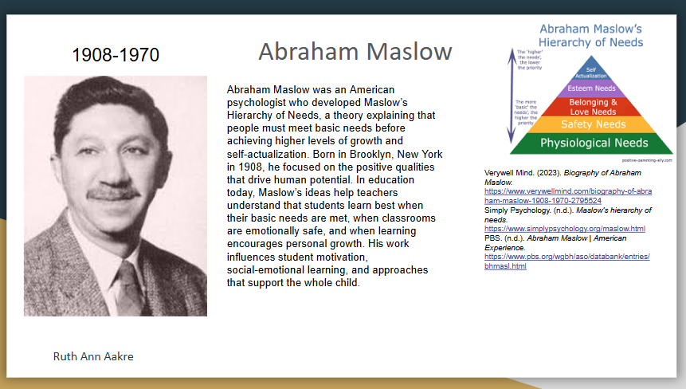
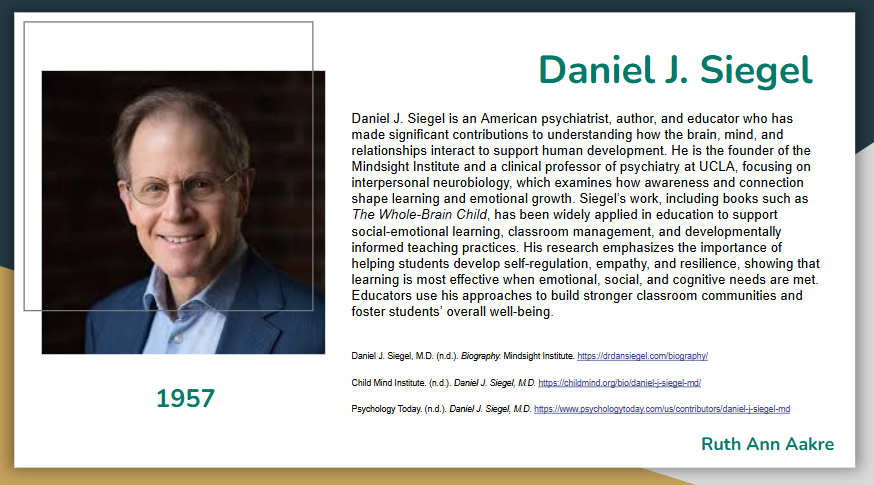
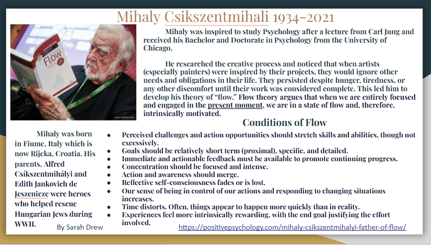
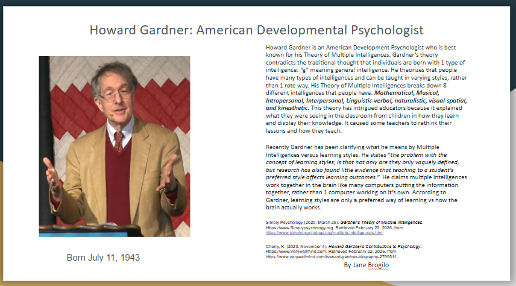
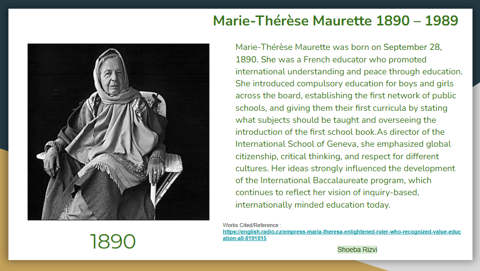

Both Montessori and Clay emphasize the importance of individualized learning and the role of the teacher as a guide. Montessori focused on prepared environments and practical materials; Clay emphasized reading and writing instruction in a structured, systematic way.
Both Montessori and Maslow emphasized the importance of meeting children's basic needs before higher-level learning. Montessori focused on providing a prepared environment that supports children's natural development; Maslow proposed a hierarchy of needs that must be satisfied before higher-level growth can occur.
Both Montessori and Siegel emphasized the importance of social-emotional development in children. Montessori focused on creating a supportive environment that fosters independence and self-regulation; Siegel emphasized the importance of secure attachment and healthy relationships for brain development.
Both Montessori and Csikszentmihali emphasized the importance of flow and engagement in learning. Montessori focused on creating a prepared environment that allows children to engage in meaningful work; Csikszentmihali emphasized the importance of finding activities that challenge and engage individuals to achieve a state of flow.
Both Montessori and Gardner emphasized the importance of recognizing and supporting multiple intelligences in children. Montessori focused on providing a variety of materials and activities that cater to different learning styles; Gardner proposed a theory of multiple intelligences that recognizes different types of intelligence beyond traditional academic skills.
Both Montessori and Maurette emphasized the importance of creating a prepared environment that supports children's natural development. Montessori focused on providing materials and activities that allow children to explore and learn independently; Maurette emphasized the importance of creating a nurturing environment that fosters creativity and imagination.
Overall, while there are some differences in their approaches, Montessori shares many similarities with the theorists we've studied in terms of their emphasis on individualized learning, social-emotional development, and the importance of creating a supportive environment for children's growth.